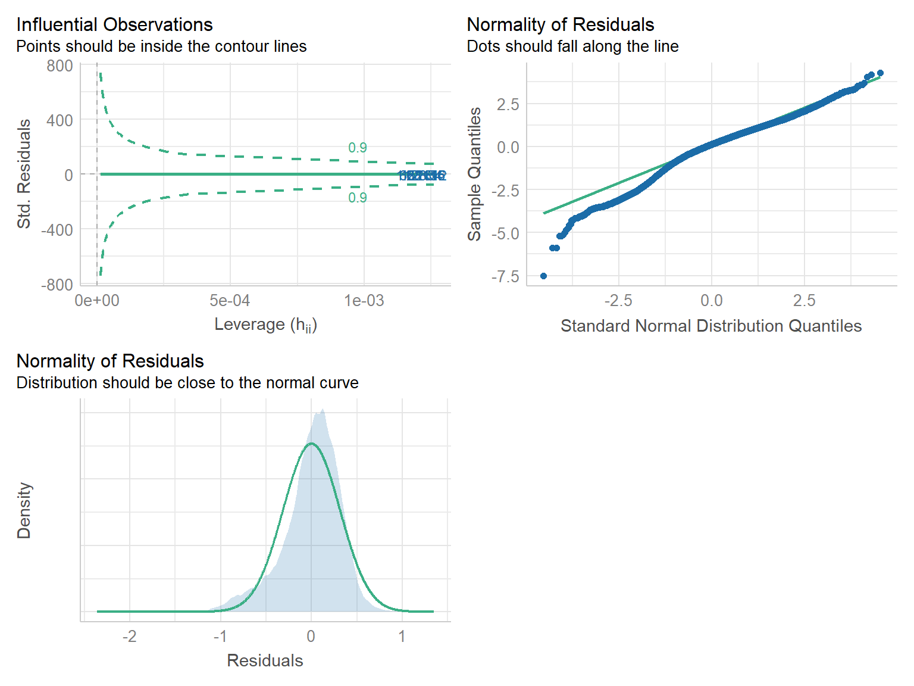
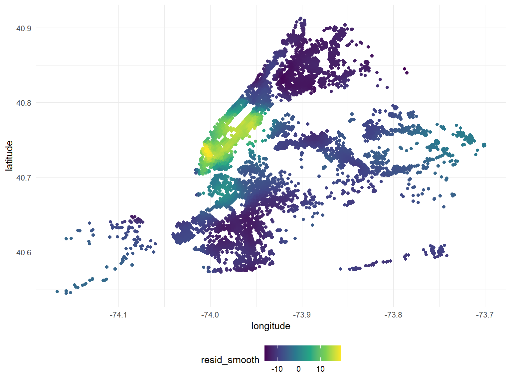
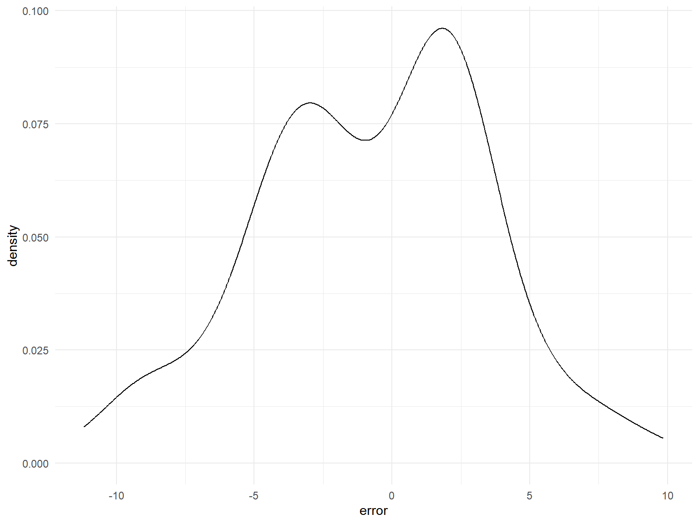

Regression Analysis
Predicting Model For Estimated Gross Income
Data
Through previous data exploration and data analysis, we have learned that there are some variables in our data set strongly associated with the estimated gross income.
Therefore, we decided to dig deeper and use some of these variables to predict estimated gross income.
The variables involved are as followed:
·estimated_gross_income (dependent): Estimated
income from the building
·latitude: Latitude of the building
·longitude: Longitude of the building
·type: Walk-up/Elevators
·borough: 1 ~ Manhattan, 2 ~ The Bronx, 3 ~ Brooklyn, 4
~ Queens, 5 ~ Staten Island
·total_units: Total number of units in the building
·year_built: The year the building was built
.gross_sq_ft: Gross square footage of the building
However, in the preliminary analysis, we found that some of them do not meet the normal distribution, so we use logarithm operation and the their distribution are fixed:
load('./data/cleaned_data.RData')
data_1 = transformed_rental_income %>%
separate(boro_block_lot, into = c("borough", "block", "lot"), sep = "-") %>%
separate(building_classification, into = c("code", "type", "type_1"), sep = "-") %>%
mutate(borough = factor(borough),
type = factor(type))
# make density plots of every variable to check its normality
p1 = data_1 %>%
ggplot(aes(x = latitude)) +
geom_density(aes(y = after_stat(density)),
fill = "#F0E442",
alpha = 0.75,
bins = 10)
p2 = data_1 %>%
ggplot(aes(x = longitude)) +
geom_density(aes(y = after_stat(density)),
fill = "#0072B2",
alpha = 0.75,
bins = 10)
# Logarithmic operation
p3 = data_1 %>%
ggplot(aes(x = log(total_units))) +
geom_density(aes(y = after_stat(density)),
fill = "#CC79A7",
alpha = 0.75,
bins = 10)
p4 = data_1 %>%
ggplot(aes(x = year_built)) +
geom_density(aes(y = after_stat(density)),
fill = "#D55E00",
alpha = 0.75,
bins = 10)
# Logarithmic operation
p5 = data_1 %>%
ggplot(aes(x = log(gross_sq_ft))) +
geom_density(aes(y = after_stat(density)),
fill = "#56B4E9",
alpha = 0.75,
bins = 10)
# Logarithmic operation
p6 = data_1 %>%
ggplot(aes(x = log(estimated_gross_income))) +
geom_density(aes(y = after_stat(density)),
fill = "#009E73",
alpha = 0.75,
bins = 10)
p1 + p2 + p3 + p4 + p5 + p6 
Fitting Model
We decide to use latitude and longtitude
with lowess (locally weighted regression scatter plot
smoothing) for smoothing model, so other 5 variables are fitted
initially.
#### log_estimated_gross_income
data_egi = data_1 %>%
mutate(
log_total_units = log(total_units),
log_gross_sq_ft = log(gross_sq_ft),
log_estimated_gross_income = log(estimated_gross_income)
) %>%
select(log_estimated_gross_income, type, borough,
log_total_units, year_built ,log_gross_sq_ft)To find the best model, we used stepwise regression procedure. That is to say, we start with no predictors, then sequentially add the most contributive predictors (like forward selection). After adding each new variable, remove any variables that no longer provide an improvement in the model fit (like backward selection)
Model without predictors
# intercept only model
io_eg = lm(log_estimated_gross_income ~ 1, data = data_egi)\[ \widehat{log\_estimated\_gross\_income} = 13.9425 \]
Model with all of the predictors
# model with all predictors
all_eg = lm(log_estimated_gross_income ~ ., data = data_egi)
# formula
equatiomatic::extract_eq(all_eg, use_coefs = TRUE, coef_digits = 4)\[ \operatorname{\widehat{log\_estimated\_gross\_income}} = 1.9014 - 0.0484(\operatorname{type}_{\operatorname{WALK}}) - 0.9161(\operatorname{borough}_{\operatorname{2}}) - 0.6698(\operatorname{borough}_{\operatorname{3}}) - 0.6618(\operatorname{borough}_{\operatorname{4}}) - 0.797(\operatorname{borough}_{\operatorname{5}}) - 0.0011(\operatorname{\log\_total\_units}) + 0.001(\operatorname{year\_built}) + 0.9741(\operatorname{\log\_gross\_sq\_ft}) \]
The best model
# stepwise procedure
egi_fit = step(io_eg, direction = "both", scope = formula(all_eg), trace = 0)
# formula
equatiomatic::extract_eq(egi_fit, use_coefs = TRUE, coef_digits = 4)\[ \operatorname{\widehat{log\_estimated\_gross\_income}} = 1.9139 + 0.9732(\operatorname{\log\_gross\_sq\_ft}) - 0.916(\operatorname{borough}_{\operatorname{2}}) - 0.6697(\operatorname{borough}_{\operatorname{3}}) - 0.6619(\operatorname{borough}_{\operatorname{4}}) - 0.7969(\operatorname{borough}_{\operatorname{5}}) + 0.001(\operatorname{year\_built}) - 0.0485(\operatorname{type}_{\operatorname{WALK}}) \]
Coefficients for best model
egi_fit %>% broom::tidy() %>% knitr::kable(digits = 4)| term | estimate | std.error | statistic | p.value |
|---|---|---|---|---|
| (Intercept) | 1.9139 | 0.0723 | 26.5 | 0 |
| log_gross_sq_ft | 0.9732 | 0.0011 | 908.3 | 0 |
| borough2 | -0.9160 | 0.0028 | -328.5 | 0 |
| borough3 | -0.6697 | 0.0021 | -316.8 | 0 |
| borough4 | -0.6619 | 0.0022 | -307.7 | 0 |
| borough5 | -0.7969 | 0.0109 | -73.3 | 0 |
| year_built | 0.0010 | 0.0000 | 25.3 | 0 |
| typeWALK | -0.0485 | 0.0022 | -22.1 | 0 |
Model checking
# check the model
performance::check_model(egi_fit, check = c("outliers", "qq", "normality"))
From above we know that log_total_units is left out in
the fitting procedure, and the checking plots indicate that our model is
well done for the sake of normality and outliers.
Predicting Model using LOWESS method on location
From this part, the model didn’t use the location
(longitude and latitude) of the building.
Obviouly, there is no linear relationship between location and gross
income. Thus, we use lowess method to approximate the influence of
location on rental price.
Here, we are interested in the predicting the “gross income per squre feet” variable. The modeling process is as follows:
- Fittting a linear model without
longitudeandlatitude - Take the residual of the model into 2-dimensional LOWESS smoothing
with
longitudeandlatitude. - For a new datapoint, – pipe into the linear model to get the linear prediction – Use the smoothed model to estimate the location residual – Add up the two terms to get the final prediction.
Building the partial-LOESS model
First, we take the dataset and fit a linear model without
longitude and latitude, and save the residual
for the following LOESS method.
rm(list=ls())
load("data/cleaned_data.RData")
transformed_rental_income =
transformed_rental_income %>%
mutate(
is_elevator = str_detect(building_classification,"ELEVATOR")
)
linear_model = lm(gross_income_per_sq_ft~ is_elevator+total_units+year_built+report_year+gross_sq_ft, data=transformed_rental_income)
transformed_rental_income =
transformed_rental_income %>%
mutate(
resid_linear = linear_model$residuals
) %>%
group_by(address) %>%
summarize(
gross_income_per_sq_ft = mean(gross_income_per_sq_ft),
resid_linear = mean(resid_linear),
longitude = mean(longitude),
latitude = mean(latitude),
is_elevator = as.logical(mean(is_elevator)),
total_units = mean(total_units),
year_built = mean(year_built),
report_year = mean(report_year),
gross_sq_ft = mean(gross_sq_ft)
)Then, we applied LOESS smoothing on the residual by location. Here,
we chose span = 0.05 because gross_income may change
quickly just by a few blocks, and our dataset is large enough to capture
such sudden changes. The smoothed residual is as follows:
lowess_surf = loess(resid_linear~latitude+longitude,data=transformed_rental_income,span = 0.05)
transformed_rental_income=
transformed_rental_income %>%
mutate(
resid_smooth = lowess_surf$fitted
)
smooth_location_resid = transformed_rental_income %>%
select(longitude,latitude,resid_smooth)
transformed_rental_income %>%
ggplot(aes(x=longitude,y=latitude,color=resid_smooth)) +
geom_point()
Predicting function and Model Validation
The residual of the new point is estimated by a local linear model
with its n_neighbours = 20 neighbours. we don’t need a
large number of neighbors because the curve is already smoothed and
niose is removed. Based on that, we can combine a local estimator and
the linear model together using the following function:
n_neighbours = 20
predict_rental = function(new_data){
if(nrow(new_data)!=1){
return("nrow must be 1")
}
location_resid =
smooth_location_resid %>%
mutate(
d=(longitude-new_data$longitude)^2+(latitude-new_data$latitude)^2
) %>%
arrange(d) %>%
head(n_neighbours) %>%
lm(resid_smooth~longitude+latitude,data=.) %>%
predict(newdata = new_data)
predict(linear_model,newdata=new_data) + location_resid
}
# saving the function for Index_Predictor Shiny App
model_coef =
broom::tidy(linear_model) %>%
select(term,estimate)
save(predict_rental,linear_model,smooth_location_resid,model_coef,file = "Index_Predictor/modeling_result.RData")To validate Our model, we sample 100 records in our original dataset, and use the model to predict their gross income pre square feet. However, this is not a cross-validation since excluding these observations has little effect on our model due to large sample number.
n_test=100
error = rep(0,n_test)
for(i in 1:n_test){
test_sample=
transformed_rental_income %>%
slice_sample(n=1)
predicted = as.numeric(predict_rental(test_sample))
error[i] = test_sample$gross_income_per_sq_ft[1]-predicted
}
tibble(error=error) %>%
ggplot(aes(x=error)) +
geom_density()